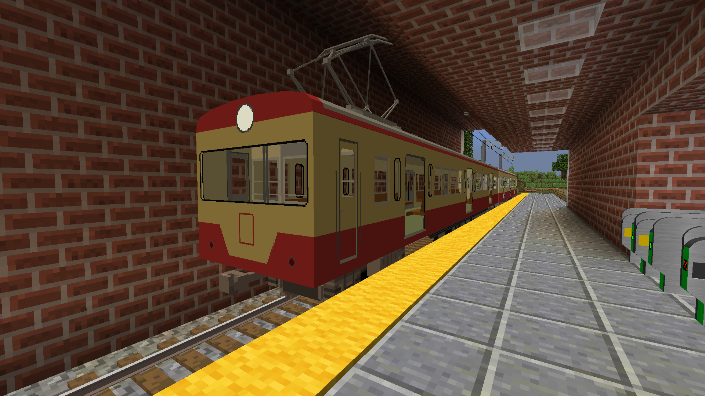
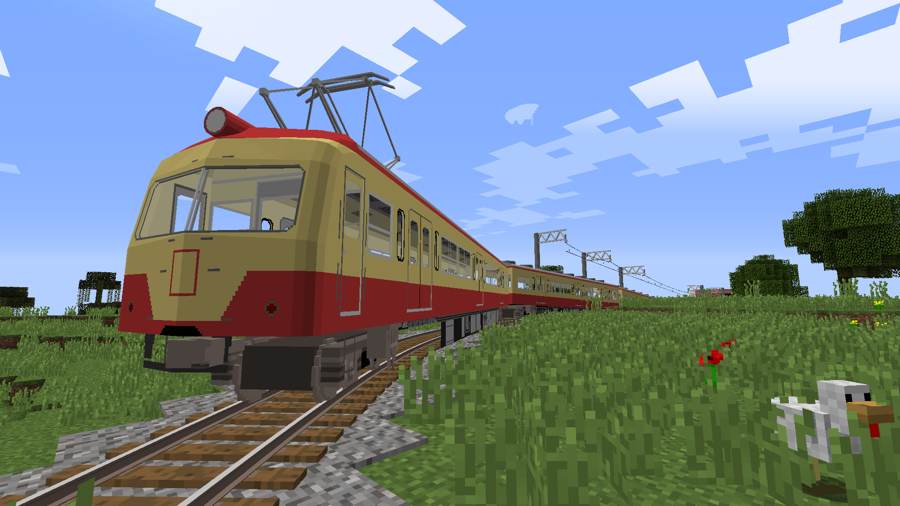

戻る
Red SEIBU Bros.

西武の「赤電」として活躍し、タッグを組んだと言われる411系と551系を追加します。
改造して利用する場合はTwitterかDiscord(@ZerosakaMakoto#4554)へお願いします。
ダウンロード（Dropbox）
ダウンロード（OneDrive）
ダウンロード（Google Drive）
現在準備中です。
Please share:)→
Tweet
記事一覧に戻る